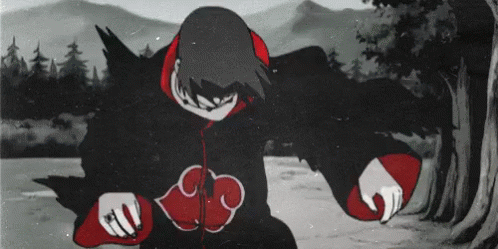

the crow
Para invocar este ser, você precisará de:
- 5 velas
- Sal
- Uma agulha
- Um símbolo de proteção (Uma cruz ou um talismã deve servir)
É importante que mantenha o símbolo com você durante todo o ritual.
Começando o Ritual
Certo, vamos lá.
Primeiro, você deve fazer um círculo de sal no chão, bem grande, para que você possa se sentar confortávelmente.
Acenda uma vela.
Agora, você irá ler uma espécie de mantra, um encantamento.
Escrevi em linhas, a cada linha já lida, acenda uma vela. Leia como preferir, em inglês ou português, a criatura vai entender.
Nesta noite escura (On this dark night)
Eu chamo o Homem Corvo (I call on the Raven Man)
Apareça diante de mim, aqui e agora (Appear before me, here and now)
E faça minha vontade. (And do my will)
Agora, pegue a agulha e fure seu dedo, até ter uma gota de sangue.
Toque a última vela com o sangue e diga:
O fogo é o meu farol (The flame is my beacon)
O sangue é meu sacrifício (The blood is my sacrifice)
Você pode ver uma sombra do Homem Corvo, ou simplesmente sentir sua presença.
Neste momento, você pode perguntar qualquer coisa, ele te responderá a verdade.
Ninguém, pelo menos nunca foi registrado, ninguém nunca perguntou mais de 3 questões. O Homem Corvo parece ter a resposta para qualquer pergunta que lhe é feita, mas ele costuma responder de modo vago, de maneira enigmática. Todas as respostas que ele já deu, foram reportadas como corretas.

É importante que nunca faça nada contra o Homem Corvo, ele aceitará isso como insulto e te levará ao purgatório.
Quando o ritual acabar, é sua vez de soltá-lo. Agradeça a criatura por responder suas perguntas e por passar um tempo com você.
Apague as velas, mas NÃO do jeito convencional, apague elas com os dedos.
Lembre-se, quando for dormir deixe a cruz ou talismã bem perto de você, o Homem Corvo ainda pode estar rondando pela sua casa.